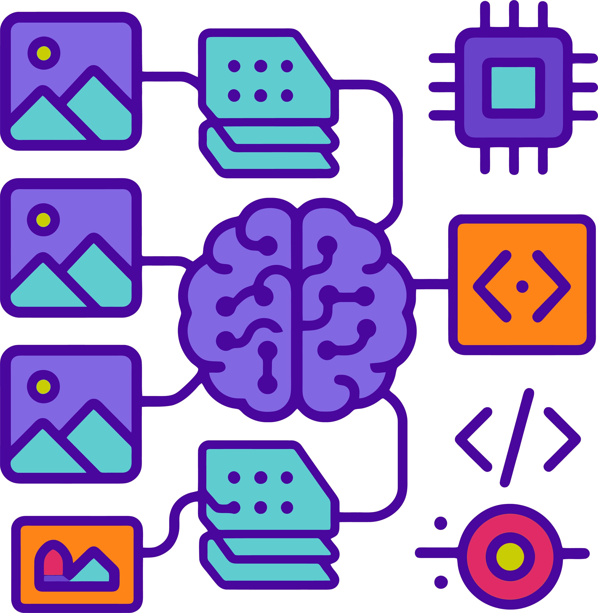
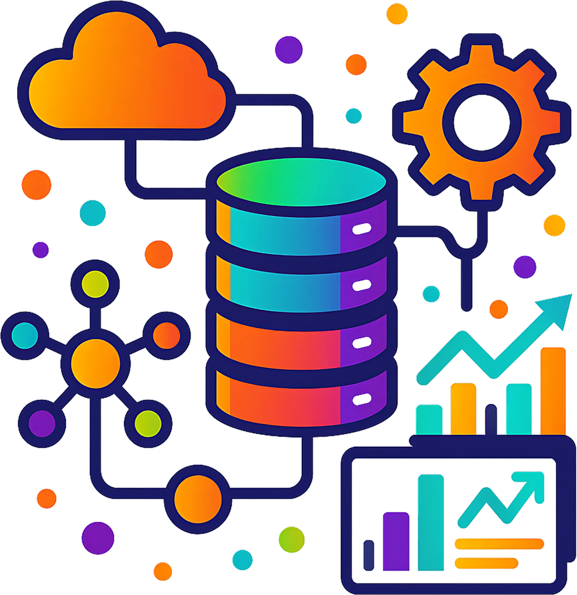

Automated Product Tagging
ResNet18 model learned reliable features from limited, imbalanced data and reduced manual catalog tagging effort by ~80%, enabling faster product onboarding for Artiszën Crafts.
Enterprise Data & AI Strategist transforming fragmented data ecosystems into scalable, governance-driven platforms that accelerate analytics, AI adoption, and measurable business value.
Neysha Pagán is a strategic Data & AI leader with 14+ years of experience designing and modernizing enterprise-scale data platforms, leading cloud transformation initiatives, and enabling advanced analytics across complex organizations. She specializes in architecting governed Lakehouse ecosystems, aligning data strategy with business objectives, and embedding AI-driven automation to improve decision-making and operational performance.
She holds an M.S. in Applied Data Science from Syracuse University and is currently completing the Chief Data & AI Officer (CDAIO) program at Carnegie Mellon University. Her focus centers on enterprise data governance, AI strategy, and building sustainable, value-driven data organizations that support long-term business growth.
Across the five projects, Neysha strengthened end-to-end skills in data engineering, machine learning, and deep learning—while emphasizing governance, automation, and measurable outcomes.
Click any card to view the full project.

Scripting for Data Analysis
Analysis of gender disparities in STEM employment and pay equity across U.S. states. Click the card to view the full project.

Deep Learning in Practice
CNN-based classification of Artiszën Crafts product images (~84.7% accuracy). Click the card to view the full project.
Big Data Analytics
Machine-failure prediction and anomaly detection with SMOTE and Random Forest. Click the card to view the full project.

Natural Language Processing
Hybrid TF-IDF + lexicon features for 5-class sentiment on Rotten Tomatoes phrases. Click the card to view the full project.

Advanced Big Data Management
Three-part project integrating childcare prices, labor statistics, and state incomes with Spark, Cassandra/MongoDB, and Kibana dashboards. Click the card to view the full project.
ResNet18 model learned reliable features from limited, imbalanced data and reduced manual catalog tagging effort by ~80%, enabling faster product onboarding for Artiszën Crafts.
Built an end-to-end pipeline joining childcare prices (6,284 rows), labor stats, and state incomes into Cassandra/MongoDB, powering Kibana dashboards for county/state affordability analysis.
Surfaced state-level disparities (e.g., women’s STEM share ≈29%) and pay gaps with choropleths and ranked gaps, giving policy stakeholders targeted levers for equity programs.
A hybrid TF-IDF + MPQA lexicon model improved precision/F1 on rare sentiment classes versus TF-IDF alone—useful for customer feedback signals where extremes are scarce.
On AI4I, class-balanced Random Forest achieved strong recall on failures, supporting proactive maintenance scheduling to reduce unplanned downtime.
Open to collaborations, advisory work, and leadership roles in data & AI.